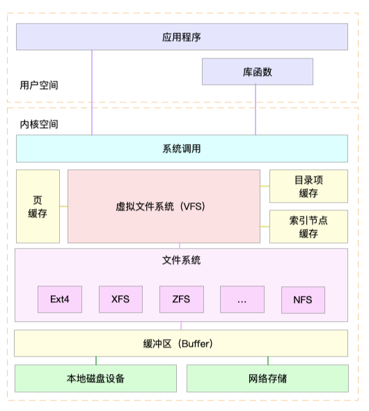
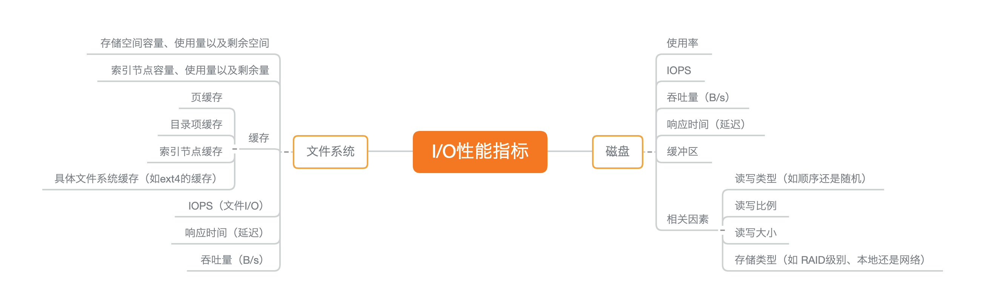
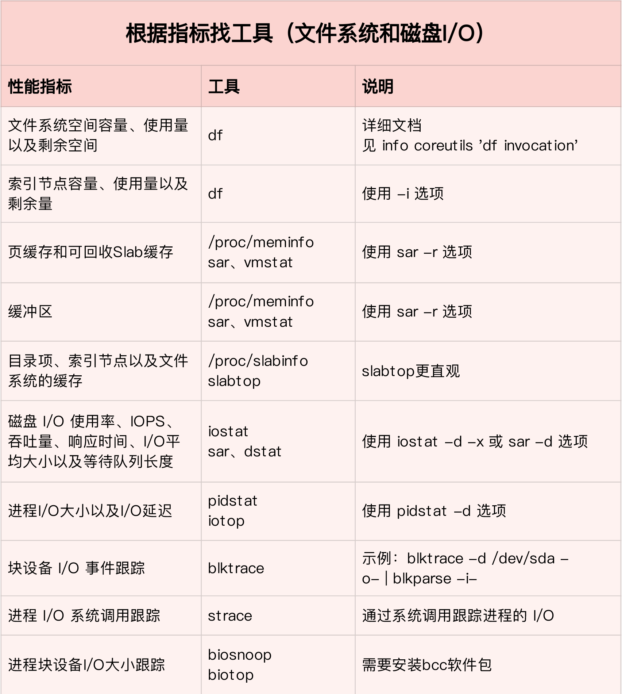
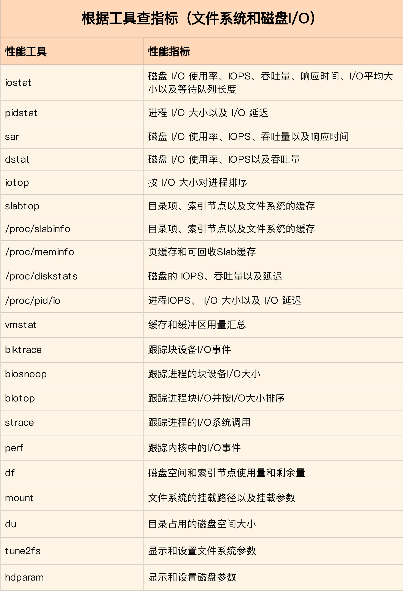
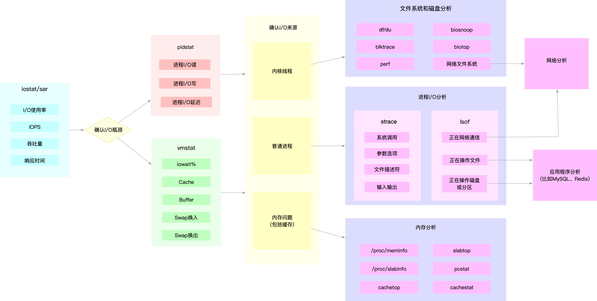

性能指标

文件系统 I/O 性能指标
- 首先，最容易想到的是存储空间的使用情况，包括容量、使用量以及剩余空间等。我们通常也称这些为磁盘空间的使用量，因为文件系统的数据最终还是存储在磁盘上。
- 容易忽略的是索引节点的使用情况，它也包括容量、使用量以及剩余量等三个指标。如果文件系统中存储过多的小文件，就可能碰到索引节点容量已满的问题。
- 其次，你应该想到的是前面多次提到过的缓存使用情况，包括页缓存、目录项缓存、索引节点缓存以及各个具体文件系统（如 ext4、XFS 等）的缓存。这些缓存会使用速度更快的内存，用来临时存储文件数据或者文件系统的元数据，从而可以减少访问慢速磁盘的次数。
磁盘 I/O 性能指标
- 使用率，是指磁盘忙处理 I/O 请求的百分比。过高的使用率（比如超过 60%）通常意味着磁盘 I/O 存在性能瓶颈。
- IOPS（Input/Output Per Second），是指每秒的 I/O 请求数。
- 吞吐量，是指每秒的 I/O 请求大小。
- 响应时间，是指从发出 I/O 请求到收到响应的间隔时间。

性能工具
- 第一，在文件系统的原理中，我介绍了查看文件系统容量的工具 df。它既可以查看文件系统数据的空间容量，也可以查看索引节点的容量。至于文件系统缓存，我们通过 /proc/meminfo、/proc/slabinfo 以及 slabtop 等各种来源，观察页缓存、目录项缓存、索引节点缓存以及具体文件系统的缓存情况。
- 第二，在磁盘 I/O 的原理中，我们分别用 iostat 和 pidstat 观察了磁盘和进程的 I/O 情况。它们都是最常用的 I/O 性能分析工具。通过 iostat ，我们可以得到磁盘的 I/O 使用率、吞吐量、响应时间以及 IOPS 等性能指标；而通过 pidstat ，则可以观察到进程的 I/O 吞吐量以及块设备 I/O 的延迟等。
- 第三，在狂打日志的案例中，我们先用 top 查看系统的 CPU 使用情况，发现 iowait 比较高；然后，又用 iostat 发现了磁盘的 I/O 使用率瓶颈，并用 pidstat 找出了大量 I/O 的进程；最后，通过 strace 和 lsof，我们找出了问题进程正在读写的文件，并最终锁定性能问题的来源——原来是进程在狂打日志。
- 第四，在磁盘 I/O 延迟的单词热度案例中，我们同样先用 top、iostat ，发现磁盘有 I/O 瓶颈，并用 pidstat 找出了大量 I/O 的进程。可接下来，想要照搬上次操作的我们失败了。在随后的 strace 命令中，我们居然没看到 write 系统调用。于是，我们换了一个思路，用新工具 filetop 和 opensnoop ，从内核中跟踪系统调用，最终找出瓶颈的来源。
- 最后，在 MySQL 和 Redis 的案例中，同样的思路，我们先用 top、iostat 以及 pidstat ，确定并找出 I/O 性能问题的瓶颈来源，它们正是 mysqld 和 redis-server。随后，我们又用 strace+lsof 找出了它们正在读写的文件。
性能指标和工具的联系
- 从 I/O 指标出发，你更容易把性能工具同系统工作原理关联起来，对性能问题有宏观的认识和把握。
- 而从性能工具出发，可以让你更快上手使用工具，迅速找出我们想观察的性能指标。特别是在工具有限的情况下，我们更要充分利用好手头的每一个工具，少量工具也要尽力挖掘出大量信息。
- 第一个维度，从文件系统和磁盘 I/O 的性能指标出发。换句话说，当你想查看某个性能指标时，要清楚知道，哪些工具可以做到。

- 第二个维度，从工具出发。也就是当你已经安装了某个工具后，要知道这个工具能提供哪些指标。

如何迅速分析 I/O 的性能瓶颈
想弄清楚性能指标的关联性，就要通晓每种性能指标的工作原理。
- 先用 iostat 发现磁盘 I/O 性能瓶颈；
- 再借助 pidstat ，定位出导致瓶颈的进程；
- 随后分析进程的 I/O 行为；
- 最后，结合应用程序的原理，分析这些 I/O 的来源。
- 为了缩小排查范围，我通常会先运行那几个支持指标较多的工具，如 iostat、vmstat、pidstat 等。
